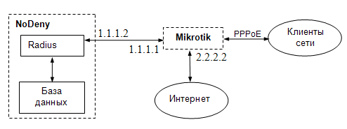

| Биллинговая система NoDeny. Настройка PPPoE сервера Mikrotik с привязкой к Radius. |
Настройка Radius
Установите radius как указано здесь.
Важно!
Процедуры mysql будут выполняться от имени bill_kernel,
этому логину обязательно дать права EXECUTE, проверяем:команды mysql
use mysql;select Execute_priv from db where Db='bill' and User='bill_kernel';
должны видеть на экране
+--------------+ | Execute_priv | +--------------+ | Y | +--------------+
команда mysql
GRANT EXECUTE ON bill.* TO 'bill_kernel'@'localhost';
Создаем необходимые процедуры mysql
команда bash
mysql -p
команды mysql. Процедура проверки логина-пароля
use bill;
DROP PROCEDURE IF EXISTS `radcheck`;
DELIMITER $$
CREATE PROCEDURE `radcheck` (IN login VARCHAR(64))
BEGIN
SELECT id,name,'Password' AS Attribute,AES_DECRYPT(passwd,'hardpass3') AS Value,'=='
FROM users WHERE name=login;
END$$
DELIMITER ;
Здесь hardpass3 - ключ шифрования паролей в БД NoDeny. Получить можно из конфига:
команда bash
grep Passwd_Key /usr/local/nodeny/nodeny.cfg.pl
команды mysql. Процедура получения атрибутов подключения
DROP PROCEDURE IF EXISTS `radreply`; DELIMITER $$ CREATE PROCEDURE `radreply` (IN login VARCHAR(64)) BEGIN DECLARE usr_id INT; DECLARE usr_ip VARCHAR(15); SELECT id,ip INTO usr_id,usr_ip FROM users WHERE name=login; INSERT into dblogin (mid,act,time) VALUES (usr_id,47,unix_timestamp()); SELECT NULL,login,'Framed-IP-Address',usr_ip,'='; SELECT NULL,login,'Framed-IP-Netmask','255.255.255.255','='; SELECT NULL,login,'Acct-Interim-Interval','50','='; END$$ DELIMITER ;
команды mysql. Процедура поддержания авторизации
DROP PROCEDURE IF EXISTS `radupdate`;
DELIMITER $$
CREATE PROCEDURE `radupdate` (IN login VARCHAR(64))
BEGIN
INSERT into dblogin (mid,act,time) VALUES
((SELECT id FROM users WHERE name=login LIMIT 1),47,unix_timestamp());
END$$
DELIMITER ;
команды mysql. Процедура разъединения
DROP PROCEDURE IF EXISTS `radstop`;
DELIMITER $$
CREATE PROCEDURE `radstop` (IN login VARCHAR(64))
BEGIN
INSERT into dblogin (mid,act,time) VALUES
((SELECT id FROM users WHERE name=login LIMIT 1),46,unix_timestamp());
END$$
DELIMITER ;
команда bash
ee /usr/local/etc/raddb/sql.conf
удаляем все запросы (фактически все начиная с authorize_check_query и до `}`) и вместо них вписываем:
текст
authorize_check_query = "call radcheck('%{SQL-User-Name}')"
authorize_reply_query = "call radreply('%{SQL-User-Name}')"
accounting_update_query = "call radupdate('%{SQL-User-Name}')"
accounting_stop_query = "call radstop('%{SQL-User-Name}')"
Проверяем:
команда bash
radtest login pass 127.0.0.1 0 hardpass5
Настройка Mikrotik

консольные команды mikrotik
radius add address=1.1.1.2 secret=hardpass5 service=ppp radius incoming set accept=yes ppp aaa set accounting=yes use-radius=yes interim-update=50 ppp profile set default local-address=2.2.2.2 dns-server=2.2.2.2 interface pppoe-server server add interface=ether1 service-name=pppoe-in authentication=chap ip firewall nat add chain=srcnat action=src-nat to-addresses=2.2.2.2
1.1.1.2 - ip radius сервера (сервера основной БД). hardpass5 - пароль для radius-запросов. 2.2.2.2 - ip на внешнем интерфейсе Mikrotik. ether1 - интерфейс, принимающий pppoe соединения. dns-server - dns сервер, который будет выдаваться клиентам.
команда bash
ee /usr/local/etc/raddb/clients.conf
вставляем текст
client 1.1.1.1 {
secret = hardpass5
shortname = NoDenyDB
nastype = cisco
}